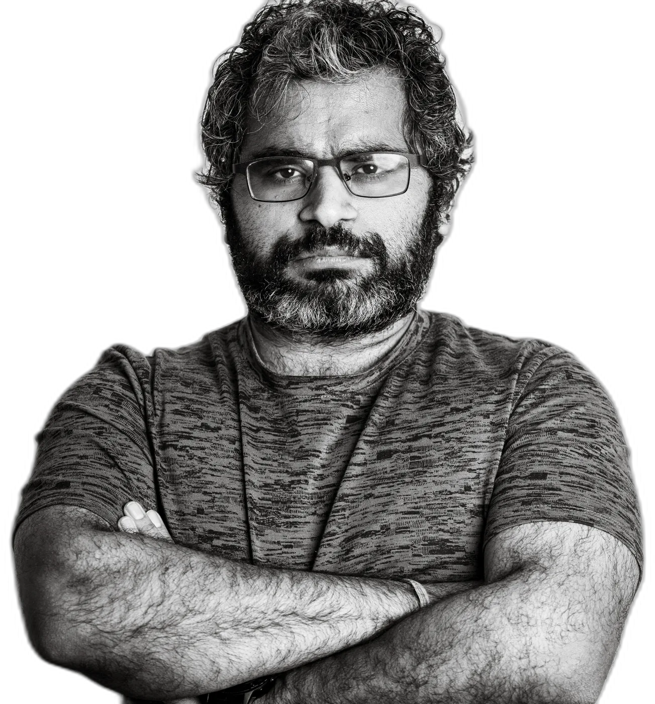

AMOC sensitivity in CMIP6
Diagnosing overturning strength, variability and forced-response across CMIP6 and LESFMIP ensembles, from 26.5°N to the subpolar gyre, with drift-corrected pipelines built on xarray and NetCDF.

0 m · SURFACE · 51.44°N, 0.94°W
Physical oceanographer studying how the Atlantic Meridional Overturning Circulation responds to a warming world.
Research Scientist, National Centre for Atmospheric Science, University of Reading.
Descend1000 m · RESEARCH
My work asks a deceptively simple question: when the climate system is forced, which parts of the ocean circulation change, which resist, and which reorganise quietly before the atmosphere notices? I focus on the AMOC, the subpolar North Atlantic, air-sea exchange, freshwater and heat transport, and the model uncertainty that decides how confidently we speak about future climate risk.
Diagnosing overturning strength, variability and forced-response across CMIP6 and LESFMIP ensembles, from 26.5°N to the subpolar gyre, with drift-corrected pipelines built on xarray and NetCDF.
Multi-century abrupt CO2 experiments expose the slow physics of overturning recovery: density gradients, boundary-current freshwater pathways, and the quiet competition between thermal and haline forcing.
I am interested in the space where long simulations meet observing systems: RAPID, OSNAP, Argo, GO-SHIP and the hard question of what the real ocean can actually constrain.
Building transparent workflows with Python, xarray, Dask, NetCDF, TEOS-10 and JASMIN for heat and freshwater budgets, thermal-wind diagnostics, water-mass transformation and climate-model intercomparison.
Applying PCMCI and causal frameworks to disentangle drivers of overturning variability from the noise of internal climate variability.
Contributing to NSF and European projects probing the past, present and future of Atlantic overturning, working with observational and modelling communities on JASMIN infrastructure.
2000 m · PUBLICATIONS
The North Atlantic Warming Hole as a compensated, freshwater anomaly
Understanding the uncertainty in simulated AMOC changes to historical greenhouse gas emissions in CMIP6
A Nordic Perspective on AMOC Tipping: Impacts and Strategies for Prevention and Governance
CMIP7 Data Request: Ocean and Sea Ice Priorities and Opportunities
The weakening AMOC under extreme climate change
Dynamical stability indicator based on autoregressive moving-average models: Critical transitions and the Atlantic meridional overturning circulation
Full list on ResearchGate and ORCID.
3500 m · BEYOND SCIENCE
Live storytelling performed in more than twenty countries, because the ocean water is not the only thing that carries or sinks.
Sports, nightlife, macro and trail photography: bodies in motion, tiny lives close up, and the strange human talent for making beauty under bad light.
Self-supported distance running across roads, trails and borders, including the Gothenburg to Oslo FKT. The longer the distance, the more honest the experiment.
Essays and field notes at egonomics.blog: science, endurance, grief, migration, absurdity and the occasional argument with myself.
4500 m · SEAFLOOR · CONTACT
For research collaboration, seminars, climate-risk conversations, photography, storytelling, or a long argument about the North Atlantic.